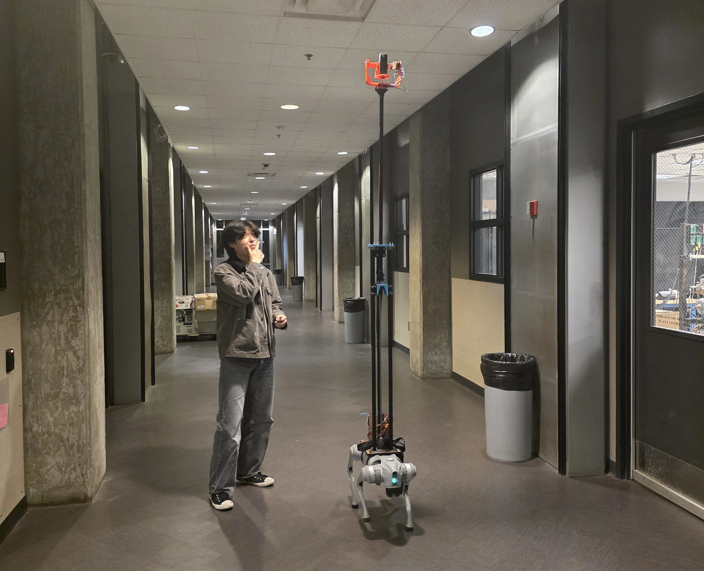

Team capstone · Aug–Dec 2025
Stabilized camera rig
A height-adjustable camera payload developed by our capstone team for a quadruped robot. My contributions included concept selection, gimbal design and drawings, and structural analysis.
Mechanical Engineer | UAV Systems | Robotics | Systems Integration
I'm pursuing my M.S. in Mechanical Engineering at Georgia Tech, with a focus on UAVs, robotics, and systems integration. My work combines mechanical design, fabrication, and testing of electromechanical hardware.

Aircraft development, robotic payload design, and professional UAV integration.
A height-adjustable camera payload developed by our capstone team for a quadruped robot. My contributions included concept selection, gimbal design and drawings, and structural analysis.

Independent fixed-wing UAV development, including airframe fabrication, custom landing gear, Pixhawk/PX4 integration, and flight testing.
UAV subsystem integration, troubleshooting, and configuration documentation, alongside a Python tool I developed to estimate flight time and range.

A custom quadcopter with modular printed components and tube arms. I designed the frame, integrated the electronics, and configured PX4.
Aircraft, mechanisms, prototypes, and the people behind them.
Select a photo to open a larger view.
SolidWorks and Onshape for mechanisms, mounting interfaces, and structural analysis.
Camera Rig design →FDM printing, laser cutting, airframe fabrication, and assembly.
Prototype development →Pixhawk, PX4, QGroundControl, sensors, actuators, and flight electronics.
UAV project overview →Hardware troubleshooting, flight testing, prototype testing, and Python modeling.
Camera Rig test notes →ME 4853. Previously ME 2110 Undergraduate Laboratory Supervising Grader, January 2025–May 2026.
I contributed to UAV integration and documentation and developed a Python performance estimator.
I led the VTOL subteam, working on structural concepts and Pixhawk integration.
Expected May 2027
May 2026 · Highest Honors
I'm seeking opportunities in mechanical engineering, UAVs, robotics, and systems integration. Please get in touch to discuss a role or my project work.
Seeking Spring 2027 internships and full-time roles starting Summer 2027.